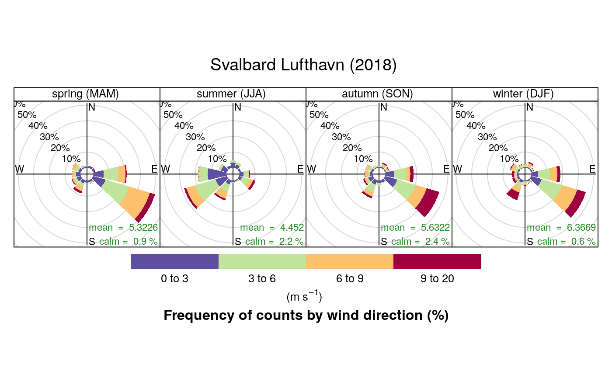
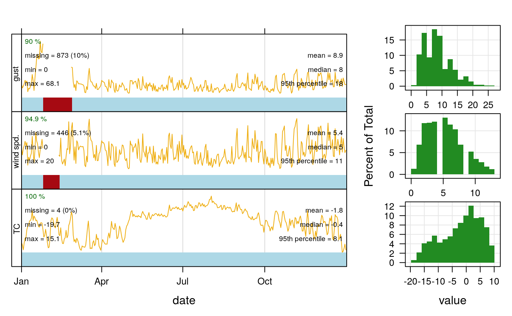

Use Case - Ogimet database [EN]
usecase_ogimet.RmdOgimet - download and visualize wind patterns over Svalbard
- Downloading hourly data from the Ogimet repository for the defined time frame (2018/01/01-2018/12/31); chosen station: Svalbard Lufthavn
- Using external package ‘openair’ to visualize the downloaded results
library(imgw)
# downloading data
df <- ogimet_hourly(date = c("2018-01-01","2018-12-31"),station = c("01008"))## [1] "01008"
## 2018 12
## 2018 11
## 2018 10
## 2018 09
## 2018 08
## 2018 07
## 2018 06
## 2018 05
## 2018 04
## 2018 03
## 2018 02
## 2018 01
## 2017 12##
## Attaching package: 'dplyr'## The following objects are masked from 'package:stats':
##
## filter, lag## The following objects are masked from 'package:base':
##
## intersect, setdiff, setequal, unionlibrary(openair) # external package for plotting wind roses
# converting wind direction from character into degress required by most
wdir <- data.frame(ddd = c("CAL","N","NNE","NE","ENE","E","ESE","SE","SSE",
"S","SSW","SW","WSW","W","WNW","NW","NNW"),
dir = c(NA, 0:15*22.5), stringsAsFactors = FALSE)
# changing date column to the format required by openair package:
df$Date <- as.POSIXct(df$Date, tz='UTC')
df$date <- df$Date
df <- left_join(df, wdir)## Joining, by = "ddd"df$ws <- df$ffkmh/3.6 # conversion to m/s from km/h
df$gust <- df$Gustkmh/3.6 # conversion to m/s from km/h
windRose(mydata = df, ws = "ws", wd = "dir", type = 'season', paddle = FALSE,
main = "Svalbard Lufthavn (2018)", ws.int = 3, dig.lab = 3, layout=c(4,1))
## date1 date2 TC ws gust
## "POSIXct" "POSIXt" "numeric" "numeric" "numeric"
# which sectors are responsible for warm/cold air mass advection:
polarPlot(df, pollutant = "TC", x = "ws", wd = "dir", k = 50, force.positive = F,
type = 'season', layout=c(4,1), resolution = "fine", normalise=FALSE)